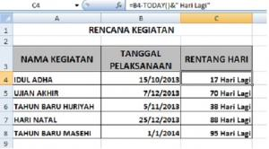

Menghitung selisih hari, bulan, dan tahun
Pengurangan sederhana menghasilkan jumlah hari. Untuk bulan atau tahun penuh (misalnya umur), pakai DATEDIF.
Coba langsung di browserLembar kerja mini, kuis, dan tanda selesai.
Buka versi interaktif=DATEDIF(awal; akhir; "satuan")
| awal | Tanggal mulai |
|---|---|
| akhir | Tanggal akhir, tidak boleh lebih kecil |
| "Y" "M" "D" | Satuan: tahun, bulan, atau hari penuh |
Langkah praktik
- Selisih hari: =B2-A2 (format hasil sebagai General).
- Umur: =DATEDIF(A2;TODAY();"Y").
- Masa kerja bulan: =DATEDIF(A2;B2;"M").
Tips
DATEDIF tidak muncul di daftar fungsi, tetapi tetap berfungsi bila diketik langsung.
Tangkapan layar praktik
1 gambar langkah demi langkah. Klik gambar untuk membuka ukuran penuh.
